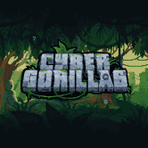
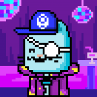
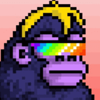
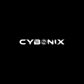
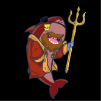
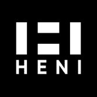
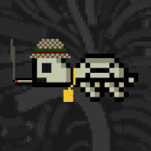
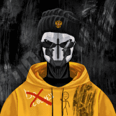
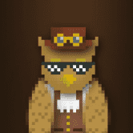

DeadFellaz 用你的 DeadFellaz 代币来艺术、文化和社区 我们在这里是为了对艺术的热爱以及游戏化、IP 和 NFT 技术的发展。 我们的工作重点是在 NFT 空间内进行创新，并以创造性的方
Deafbeef V2 DEAFBEEF 在 2020 年 COVID 19 大流行开始时开始了一个艺术项目。当我的孩子们还小的时候，我在岩石下生活了 7 年之后，我发现模块化合成器已经重新流行起来。拥有电气工
Death Combat ETH NFT Combat / Death Combat 是一款基于以太坊的 PvP 对战游戏，您可以在其中使用您铸造或拥有的武器和装备进行多人战斗。我们是一款跨 IP、跨平台（PC+ 移动）的 PvP 格
DeFine DeFine 的核心是社交。 DeFine 旨在为 web 3.0 构建一个基于 NFT 的去中心化社交网络。 主要亮点包括： 首先，一个独特的基于 NFT 的社交档案系统，赋予用户特殊的创世徽章，这
(B)APETAVERSE (B)APETAVERSE 是 BAPEFAM 聚集在一起的虚拟世界，将收藏品的目的提升到一个新的水平。 从官方的 A BATHING APE®️ 概念化，人猿之王将成为 (B)APETAVERSE 的头条新闻，并首次揭开他的面庞。
BasementDwellers V2 Basement Dwellers 是一个受 meme 文化和游戏玩家刻板印象启发的项目。 如果您在语音聊天中与您的朋友进行 meme 交流时，已经连续几个小时坐下来研究您最喜欢的游戏，那么您将
Bastard Gan Punks V2 BASTARD GAN PUNKS 的第 2 版比 BOOMER CRYPTOPUNKS 和 BOOMER CRYPTOPUNKS 更酷、更好、更傻。 版本 1 混蛋 GAN 朋克。 这一次，所有 CRYPTOPUNK 属性都被提取出来，并用 GAN 训练了它们所有组合的新数据集，以生出更多
Bauhaus Blocks Bauhaus Blocks 是 8192 个可证明稀有的受包豪斯启发的 NFT 的生成集合。 由 372 个独特的块以四种不同的格式和调色板连接而成。 第一个“风格指南”，包豪斯引发
Bear Game NFT 渔民和熊在大草原上争夺诱人的 $SALMON 奖品。 玩通过以太坊链为 NFT 持有者提供效用的游戏。 1 美元鲑鱼 = 1 美元鲑鱼。 $SALMON 在 SALMON Game 生态系统中没有其他功能，并且不能
Circular Art Circular Art 是一个生成艺术平台，旨在以可持续方式资助公共产品，同时为艺术家提供一个茁壮成长的平台。 关于乐观 哇！连接方式 @CryptoTallzy 完全铸造！450/450 这意
Cubie Cubie Minting 在 https://mint.cubie.art/Cubie 是一个社区驱动的 NFT 和 3000 TRX 铸币厂。 Tron 上的 GameFi 项目。探索广泛的 Cubies 系列！普通、独特、稀有、史诗和传奇，它们都很可爱，各有特色。共有 150 个独特的
Cukies World Cukies World 是 Tron Network 开发的第一个游戏赚钱游戏。我们有 12,000 个可用的 Cukies (NFT)，它们是游戏的主要角色。 根据稀有度的不同，有 6 种不同类型的 Cuki，当您铸造
Curious Addys' Trading 欢迎来到好奇的 Addys 交易俱乐部！我们收集了 5,000 只可爱的章鱼，准备与您一起探索 NFT 和加密货币。我们的目标是成为 NFT 新手和加密货币新手的默认第一站，因此我
 Cyber Gorillas Official CyberGorillas 是 3333 只随机生成的 Cyber 主题大猩猩的集合，其中包括 333 只创世纪 CyberGorillas。在工业烟雾中
Cyber Hornets Colony Club 故事、艺术和社区优先。 Cyber Hornets Colony Club 是一个收藏品品牌，拥有 8,888 件独特的 ERC-721 不可替代的代币艺术品 (NFT)，其所有权和真实性的公开证明存储在
 Cyber Neko 我们正在为 DeFi 用户建立一个以 Zootopia 为主题的社区，其中 Cyber Neko 是一等公民。 Cyber Neko 是我们的第一个 NFT 收藏，也是成为 Pod 镇公民的通行证。在
 CyberKongz CyberKongz 是独特且随机生成的 2D/3D NFT 社交头像，用于您的在线体验。有些看起来很正常。有些看起来很奇怪。有些简直太酷了！也许有些甚至看起来很眼熟！ OG Kong
 Cybonix Genesis 这一年是 2777 年，赛博尼克斯半机械人被艾尔多神秘主义者赶出了他们的母星 Cygonia。由于只有 1500 名最精锐的赛博尼克斯人在最初的袭击中幸存下来，他
 Daddy Shark's NFTs & games 鲨鱼爸爸要回家了！ Daddy Shark 带着 NFT、游戏和可定制的奖励从商店回来了。鲨鱼爸爸也在这里通过向专注于海洋保护的慈善机构捐款来拯救海洋。到目前为止，
 Damien Hirst - The Currency HENI 很高兴推出 Damien Hirst 的首个 NFT 系列 The Currency。 The Currency 重新构想了 NFT 的使用方式，是 10,000 个 NFT 的集合，对应于存储在英国安全保险库中的 10,000 件独特的实物艺术
 DAO Turtles DAO Turtles 将使用一种名为 $Turtleshells 的代币实施的治理模型来运行。拥有此代币的个人能够影响治理提案投票，参与私人 DAO 对话和要求按比例分享 DAO 收益。 一个分散的自治组
 Daopolis NFT Collection 自动生成 9192 个 NFT。 Daopolis 公民诞生于 CyberTime 时代，将成为 Celo 上新游戏元世界的基础。找到您的数字化身，进入私人俱乐部并参与独特的 NFT 游戏！ 道波利斯是一座未来
 CryptoHoots Steampunk Parliament CryptoHoots 是一群吵闹的蒸汽朋克猫头鹰，他们认为 20 世纪是一个错误。他们生活在虚拟世界的另一个时间线中，齿轮驱动的小工具和蒸汽动力机械统治着它们的栖息地
CryptoLev Cards 首次持有特定代币价值并从中大量获利的新 nft 卡所代表的代币的市场价格变化。 每张卡片是价值 1:1 的令牌打印到它。 任何人都可以索取和交易这张卡，并且对 NFTRADE
CryptomonKeys CryptomonKeys 是一个基于 NFT 技术的自由分发、社区驱动、富含 meme 的数字交易卡系列，在这里颠覆 meme 经济。 CryptomonKeys 是一个基于 NFT 技术的自由分发、社区驱动、富含 meme 的数字交易卡
CryptoMutts CryptoMutts 是以太坊区块链上 10,000 个随机生成的 NFT 的集合。采用 CryptoMutt 包括成为第一个 NFT 艺术俱乐部的成员。会员将获得创作者 Kenny Schachter 的艺术内容的早期访问权，包括艺术市场文
CryptoPhunks Not Larva Labs 现在是 CryptoPhunks 的官方主页。 我们创建了一个免版税的市场，用户最终可以轻松地买卖 CryptoPhunks。 CryptoPhunks 于 2021 年 6 月推出，已在三个不同的场合从
CryptoPigs CryptoPigs 是 ONE 上由算法生成的、高度受限的 NFT。这些令人难以置信的 NFT 有 5000 个版本，并且在未来将游戏化、虚拟宠物机制、PvP（猪对猪）和 Freyala XYA 生态系统集成
CryptoPolz CryptoPolz 是在元宇宙中游泳的 9696 种小型两栖生物的集合。 o~o~o~ 该项目不隶属于 CrypToadz。 这个项目可以集成其他NFT项目作为元宇宙/游戏里面的道具，比
CryptoSeals CRYPTOSEAL 是 ERC721 不可替代的代币。将仅提供 9999 个密封件。每个印章均由计算机生成并具有自己的属性。密封件和属性存储在 IPFS + ARWEAVE 上。密封件有不同的类型，每一种都代
CryptoSkulls CryptoSkulls 是存储在以太坊区块链上的 10,000 个可收藏的不可替代代币。 该系列按照 ERC-721 标准运作：每个 CryptoSkull 只属于一个人。它不能被复制、删除或破坏。 每个 CryptoSkull 字符都是具有唯
CryptoSouls CryptoSouls 是存储在以太坊区块链上的 50 个可收藏的 ERC-1155 不可替代代币。每个 CryptoSoul 都是反映在线文化的独特动画图像。 今天的实时 CryptoSoul 价格为 0.000661 美元，24 小时交易量不可用。
CryptoWaifus CryptoWaifus 是一个以动漫女孩、NFT 和我们称之为 CryptoWaifus 的可爱面孔为中心的集合！每个外服都是独一无二的，100% 归您所有；它不能被复制、带走或销毁。 CryptoWaifus 是在 Avalanche